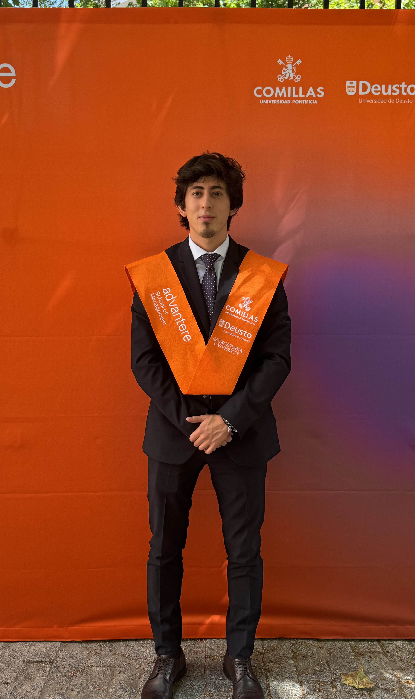
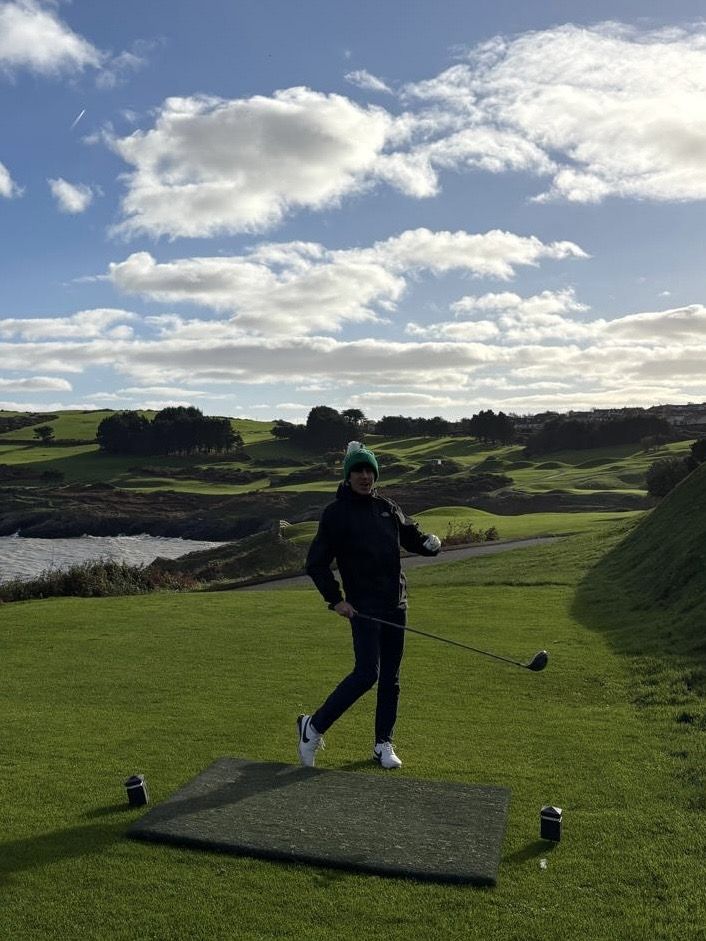
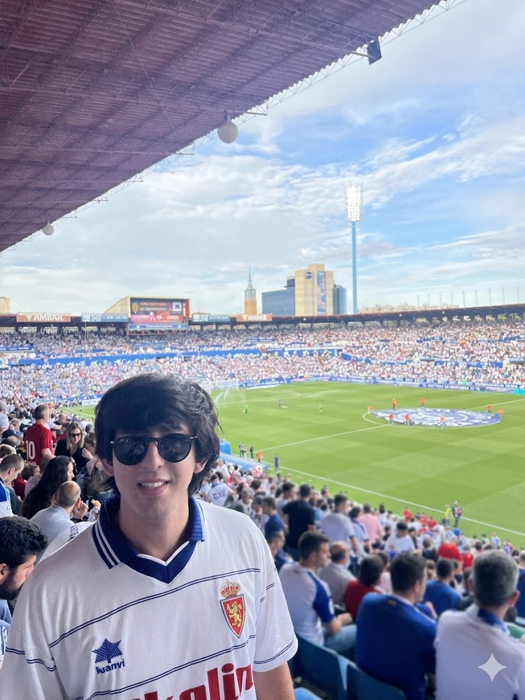

I’m Emanuele — a Finance professional specialized in bridging the gap between quantitative analysis and financial structure.
My academic background is built on a solid double foundation. I hold a Bachelor’s in Finance and Accounting, which provided me with a deep understanding of financial reporting and audit standards. Thanks to the rigor of this degree, I have been granted full exemptions for the Applied Knowledge and Applied Skills exams of the ACCA. This allows me to start directly at the Strategic Professional level, which I am committed to completing. To complement this, I also hold an MSc in Finance specialized in Quantitative Methods, mastering the mathematical modeling necessary to navigate complex market uncertainties.
Currently, I am part of the team at Ikaria Asesores. In this role, I have expanded my expertise beyond local markets, managing international projects across Italy, Portugal, and the Netherlands. This experience has been vital in developing a versatile professional profile, capable of adapting to different regulatory environments and coordinating financial operations in diverse European jurisdictions. My work is driven by a commitment to precision, loyalty, and a relentless work ethic.
My career has always been defined by an international mindset. After managing projects across several European markets, I am now focused on transitioning my career to Ireland. I am particularly drawn to Ireland’s robust financial services sector and its global leadership in accounting and audit standards. My goal is to leverage my accounting background and my ACCA exemptions to contribute to the Irish market while finishing my professional qualification. I have immediate relocation availability and, crucially, accommodation already secured in the country.
I’m naturally drawn to problems where structure matters—whether that’s the logic of a consolidated balance sheet, the architecture of a derivative, or the Python code that connects them. Driven by pure curiosity, I am also pursuing a part-time online Bachelor’s in Computational Mathematics as a personal hobby. It’s my way of exploring the "why" behind the numbers, though my professional focus remains firmly on delivering value and analytical rigor in the financial sector.
Outside of the office, you’ll find me golfing, running, or following Real Zaragoza. I’m a firm believer that the discipline required for a long-distance run and the strategic patience of golf are essential traits for a well-rounded professional in high-pressure environments.


